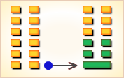
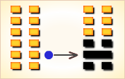
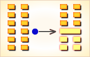
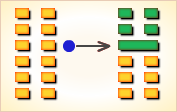
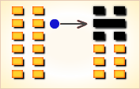
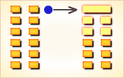

周易第2卦_坤卦(坤为地)_坤上坤下
如有疑问互相交流，微信：470283584
周易第2卦详解
坤卦原文
坤。元，亨，利牝马之贞。君子有攸往，先迷后得主。利西南得朋，东北丧朋。安贞，吉。
象曰：地势坤，君子以厚德载物。
白话文解释
坤卦：大吉大利。占问雌马得到吉兆。君子前去旅行，先迷失路途，后来找到主人，吉利。西南行获得财物，东北行丧失财物。占问定居，得到吉兆。
《象辞》说：大地的形势平铺舒展，顺承天道。君子观此卦象，取法于地，以深厚的德行来承担重大的责任。
《断易天机》解
坤卦坤上坤下，为坤宫本位卦。坤卦为柔顺，为地气舒展之象，具有纯阴之性，先失道而后得主，宜往西南，西南可得到朋友。
北宋易学家邵雍解
柔顺和静，厚载之功；静守安顺，妄动招损。
得此卦者，宜顺从运势，以静制动，不宜独立谋事，顺从他人，一起合作，可成大事。
台湾国学大儒傅佩荣解
时运：为人厚道，声名远传。
财运：满载而归。
家宅：家庭安稳；婚嫁大吉。
身体：柔软运动。
传统解卦
这个卦是同卦（下坤上坤）相叠，阴性。象征地（与乾卦相反），顺从天，承载万物，伸展无穷无尽。坤卦以雌马为象征，表明地道生育抚养万物，而又依天顺时，性情温顺。它以“先迷后得”证明“坤”顺从“乾”，依随“乾”，才能把握正确方向，遵循正道，获取吉利。
大象：大地承载万物，以德服众，仁者无敌。
运势：诸事不宜急进，以静制动为宜。
事业：诸项事业可以成功，得到预想的结果，但开始出师不利，为困境所扰。切莫冒险急进，须小心谨言慎行，尤其不可单枪匹马，独断专行。取得朋友的关心和支持最为重要，在他人的合作下，共同完成事业。因此，应注重内心修养，积蓄养德，效法大地，容忍负重，宽厚大度，以直率、方正、含蓄为原则，不得贪功自傲，持之以恒，谋求事业的成功。
经商：机遇不很好，切莫冒险，以稳健为妥，遇到挫折，务必即时总结经验。注意储存货物，待价而沽，处处小心为是。
求名：比较顺利，具备基本条件，踏踏实实，埋头苦干，不追求身外之物，即可吉祥。
婚恋：阴盛。以柔克刚，女方柔顺，美好姻缘，白头到老。
决策：忠厚、温和，待人真诚，热心助人，因此也能得到他人的帮助，可往往因不提防小人而受到伤害，但无大碍。性格灵活，工作方法多样，可以左右逢源，得到赞许。
台湾张铭仁解卦
地：表示大地为母，天生之母性也。六冲纯卦，主大好大坏之卦象。优点：如母亲般地柔顺、牺牲、付出，有事事和顺之意。缺点：过于委缺求全，没有了自己的想法和观念。此卦论感情，有前世因缘的影响，自己就有如母亲大姊般地照顾对方，无怨无悔，会很辛苦、多劳累。事业，适合当任副手之职位，忌任主事者，容易软弱难成事。
解释：在母胎里孕育中，不宜创业。
特性：为人较为保守，善于计划与研究工作，适合任辅佐幕僚之职，做人朴实，人缘佳，大好人型，男性桃花多，女性则爱情专一。
运势：诸事不宜急进，退守以静制动者吉。坤者大地平静，任其他物所摧而不为所动者大利也。若醉心私欲，违背常理，则有无妄之灾。
家运：幸福平静之象。
疾病：病情严重，为腹、肠胃、肌肉等慢性病（腹疾、脾胃之疾、饮食停滞，从而食不化）。
胎孕：生贵子，女儿亦为福。
子女：儿女众多，和睦幸福也。
周转：须耐心去求，否则难成。
买卖：勿急，交易可成。
等人：不会来，须再待些时日。
寻人：此人为色情之事出走，于西南方附近之地也。
失物：难以寻回，大部分均不知下落。
外出：宜结伴而行。可去陌生的地方。
考试：希望不大。
诉讼：防房地产之争，宜和解，有始无终之兆。
求事：不称意亦不理想，另寻。
改行：改行不利，宜固守本份。
开业：开业者再观望，目前尚未筹备妥当，不宜。
周易第2卦初六爻详解
初六爻辞
初六。履霜，坚冰至。
象曰：履霜坚冰，阴始凝也。驯致其道，至坚冰也。
白话文解释
初六：践踏着薄霜，可以推断坚厚的冰层快要冻结成了。
《象辞》说：践踏着薄霜，可以推断坚厚的冰层快要冻结成了。这表明阴冷之气开始凝聚了，遵循自然规律的推进，坚厚的冰层快要冻结而成了。
北宋易学家邵雍解
平：得此爻者，宜谨防仇怨引起的纠纷。阴气盛的人则会大兴家业。做官的要谨防小人的谗言而生祸。
台湾国学大儒傅佩荣解
时运：由卑而尊，不可躁进。
财运：渐积可致富。
家宅：阴盛不吉；婚嫁不利。
身体：阴寒之症，久则难治。
初六变卦

初六爻动变得周易第24卦：地雷复。这个卦是异卦（下震上坤）相叠。震为雷、为动；坤为地、为顺，动则顺，顺其自然。动在顺中，内阳外阴，循序运动，进退自如，利于前进。
周易第2卦六二爻详解
六二爻辞
六二。直，方，大，不习无不利。
象曰：六二之动，直以方也；不习无不利，地道光也。
白话文解释
六二：平直、方正、辽阔是大地的特点。即使前往陌生的地方，也没有什么不利的。
《象辞》说：六二的爻象是平直而且方正，即使前往陌生的地方，也没有什么不利的，因为地道是广大无边的。
北宋易学家邵雍解
吉：得此爻者，会不愁吃喝，衣食无忧。做官的会升迁，身居高位。女命则为贤良起家。
台湾国学大儒傅佩荣解
时运：功可成，名可就。
财运：获利可期。
家宅：居家如意；婚嫁顺利。
身体：不药而愈。
六二变卦

六二爻动变得周易第7卦：地水师。这个卦是异卦（下坎上坤）相叠。“师”指军队。坎为水、为险；坤为地、为顺，喻寓兵于农。兵凶战危，用兵乃圣人不得已而为之，但它可以顺利无阻碍地解决矛盾，因为顺乎形势，师出有名，故能化凶为吉。
周易第2卦六三爻详解
六三爻辞
六三。含章可贞。或从王事，无成有终。
象曰：含章可贞，以时发也；或从王事，知光大也。
白话文解释
六三：战胜殷商。称心的占卜。有人服役于战争，没有取得战绩，但结局还是好的。
《象辞》说：战胜殷商，称心的占卜，说明能抓住时机采取行动。有人服役于战争（没有取得战绩而有好的结局），因为他才智广大。
北宋易学家邵雍解
平：得此爻者，谋望可成，认真经营会有收获。做官的会有升迁的希望。女命则为德妇。
台湾国学大儒傅佩荣解
时运：待时而发，可保功名。
财运：把握时机，必有利益。
家宅：凝聚向心力。
身体：无可挽回，凶。
六三变卦

六三爻动变得周易第15卦：地山谦。这个卦是异卦（下艮上坤）相叠，艮为山，坤为地。地面有山，地卑（低）而山高，是为内高外低，比喻功高不自居，名高不自誉，位高不自傲。这就是谦。
周易第2卦六四爻详解
六四爻辞
六四。括囊，无咎，无誉。
象曰：括囊无咎，慎不害也。
白话文解释
六四：扎紧了口袋，如缄口不言，没有指责，也没有赞誉。
《象辞》说：扎紧了口袋，如缄口不言，是说谨慎才没有祸害。
北宋易学家邵雍解
平：得此爻者，经营受阻，大凡谨慎收敛者，则无横来之祸。做官的要谨守常职，可望升迁。女命则贤而起家。
台湾国学大儒傅佩荣解
时运：收敛为要，但求无过。
财运：落袋为安，不再投资。
家宅：平安是福。
身体：谨慎保养。
六四变卦

六四爻动变得周易第16卦：雷地。这个卦是异卦（下坤上震）相叠，坤为地，为顺；震为雷，为动。雷依时出，预示大地回春。因顺而动，和乐之源。此卦与谦卦互为综卦，交互作用。
周易第2卦六五爻详解
六五爻辞
六五。黄裳，元吉。
象曰：黄裳元吉，文在中也。
白话文解释
六五：黄色的裙裤，大吉大利。
《象辞》说：黄色的裙裤大吉大利，因为“黄裳”象征着人内在的美德。
北宋易学家邵雍解
吉：得此爻者，将会获得财利，事事安稳，没有灾难。做官的将会升迁，飞黄腾达。女命则为德妇，贤惠之人。
台湾国学大儒傅佩荣解
时运：功名大显。
财运：必定获利。
家宅：和乐融融。
身体：病在肠胃。
六五变卦

六五爻动变得周易第8卦：水地比。这个卦是异卦（下坤上坎）相叠，坤为地，坎为水。水附大地，地纳河海，相互依赖，亲密无间。此卦与师卦完全相反，互为综卦。它阐述的是相亲相辅，宽宏无私，精诚团结的道理。
周易第2卦上六爻详解
上六爻辞
上六。龙战于野，其血玄黄。
象曰：龙战于野，其道穷也。
白话文解释
上六：龙在大地上争斗，血流遍野。
《象辞》说：龙在大地上争斗，比喻人走到了穷困的绝境。
北宋易学家邵雍解
凶：得此爻者，有竞争的困扰，会有大的损失。做官的会有被贬之祸。
台湾国学大儒傅佩荣解
时运：穷途末路。
财运：血本无归。
家宅：失序不和。
身体：肝血失调，危险。
上六变卦

上六爻动变得周易第23卦：山地剥。这个卦是异卦（下坤上艮）相叠。五阴在下，一阳在上，阴盛而阳孤；高山附于地。二者都是剥落象，故为“剥卦”。此卦阴盛阳衰，喻小人得势，君子困顿，事业败坏。